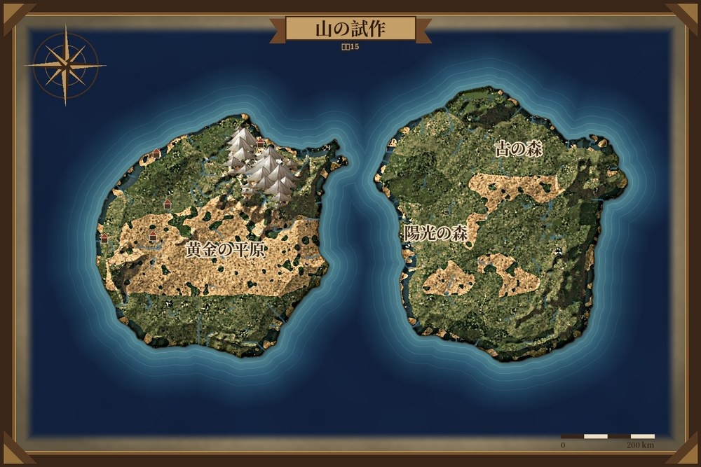
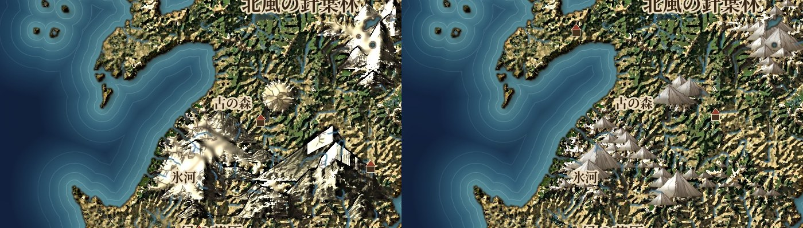

山の絵を下データと切り離して描く試作(段階15)
概要: ユーザー指示「山は下のデータを無視してそこに山を描く」「Geminiの山の描き方をプログラムで再現」「ネットで山の絵を作るプログラムを探す」に沿って試しました。山の位置と大きさの目安だけを高さから取り、形・陰・線は山の記号として独立に描く方式です。これで前回の「直線辺の白い三角」は出なくなり、3つの世界(Azgaar・PWG・簡易生成)で同じ山の描き方が通りました。ただしGeminiの山にはまだ及びません(下記)。
1. ネットで探した結果
- 山の絵を自動で作る、そのまま使える完成品は見つからなかった(検索は3回・目視の確認のみ)。
- Sigil of Kings「絵画風の山」: 輪郭にノイズ、主稜線と副稜線、左右で明るさを変える、稜線や輪郭からの距離で陰を付ける、の手順。コードは非公開で、考え方のみ使える。私の方式と同じ向きでした。
- Red Blob mapgen4: 山や木は横から見た絵、川や海岸は上から見た絵という伝統表現。コードはGitHubにあるが、ライセンス名はページで未確認(使う前に要確認)。
- 地形を斜面の線と光で描く論文(カルガリー大): 線の密度で明暗を出す考え方。コードの公開は見当たらなかった。
- Azgaarの山アイコン集(MIT、使用可): 手元で見ると、灰色一色の平らなベクター絵で、Geminiの質感とは違う(採用せず)。
2. Geminiの山を拡大して読み取った特徴(私の目視)
- 1つの峰は幅広く低めで、すそがなだらかに広がる(高さは幅の半分ほど)。左右非対称で、頂点が少しずれる。
- 明るい面(左)はクリーム色〜白で灰色のまだら、暗い面(右)は灰褐色で、頂点から扇状の筋が下りる。
- 暗い面側の輪郭は濃い茶色の線、明るい面側はごく薄い。
- 峰が3〜8個の群れになり、奥の大きな峰の前に小さな峰が重なる。足もとは茶色いすそで地面になじむ。
 絵番号 E081
絵番号 E081左=Gemini / 中=Azgaar世界に載せた私の山 / 右=PWG世界に載せた私の山
3. 作った描き方(コード: mtn15.py)
- 置き場所: 高さの高い所がまとまった地域だけに、列を作って峰を並べる。大きさは高さと「群れの濃淡の乱数」で決める。下の地図の絵や細かい高さは使わない。
- 1つの峰: 輪郭=(外へふくらむ曲線+副峰+ゆらぎ)/面=頂点から扇形に区切り、面ごとに明暗を変えて境目に細い線/暗い面=扇状の筋/輪郭=暗い面側だけ濃く/すそ=下の地面の色へ茶色でなじませ、足もとに薄い影。
- 描く順は奥(上)から手前(下)。最後に陸の色の上へ重ねる。ほかの処理(稜線の細線・海・色彩加算)はそのまま。
4. 結果(3つの世界・手調整なし)
 絵番号 E082
絵番号 E082Azgaar世界(山岳地帯が横に長く、山が帯状に並ぶ)
 絵番号 E083
絵番号 E083PWG世界(山は小さな群れが数か所)

絵番号 E084簡易生成の世界
5. 前の山との比較(左=段階14、右=今回)
 絵番号 E085
絵番号 E085
絵番号 E086上=簡易生成 / 下=PWG。直線辺の白い塊が、すそのある峰の群れになった。
時間とメモリ(実測・各1回)
- 山の絵を描く部分は約1秒。山の段階(段階14)を使わないので、処理の合計は約6〜9秒、最大メモリ約600MB(前は約8〜11秒・約770MB)。
- 走らせ方:
python3 run_pipeline.py <世界dir> <出力dir> "題" "副題" --mtn icons
目で見た評価(私の印象。判断はユーザーに)
- 良い点: 下の地図に関係なく山が描け、浮いて見える直線の塊が消えた。群れ・暗い面の筋・面の区切り・足もとの影が出て、Geminiの「山脈」の雰囲気に近づいた。
- まだ違う点: ①峰の形がどれも似た円すいで、Geminiのような個性(岩の凸凹・肩・欠け)が少ない。②Geminiの山は白と灰色の質感がもっと細かい。③山の数が少ない世界(PWG)は、Geminiより山が控えめ。④Azgaarの帯状の並びは規則的に見える。⑤足もとの緑・砂とのなじみは足りない。
限界・未確認
- 3つの世界を各1枚だけ・目視のみ。Geminiとの近さを測る数値の物差しは使っていない。
- 山の大きさ・数・明暗の値は、私が見ながら決めたもの。世界6(氷)などの寒い世界での見え方は未確認。
- ネット検索は3回だけ。既存の自動生成プログラムを網羅的に調べたとは言えない。
- iPhoneでの見え方は未確認。
コード: mtn15.py(山の記号)/ gstyle10.py(組み込み)/ run_pipeline.py(--mtn icons)